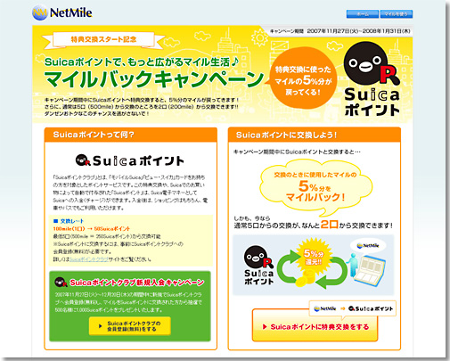

|
2007年11月27日
株式会社ネットマイル
『ネットマイル』から『Suicaポイント』へポイント交換開始
～『Suicaポイント』への特典交換サービス開始のお知らせ～
インターネット上の共通ポイントプログラムを運営する株式会社ネットマイル（本社：東京都千代田区、代表取締役社長：山本雅 以下、ネットマイル社）は、本日2007年11月27日（火）より、『ネットマイル』から東日本旅客鉄道株式会社（本社：東京都渋谷区、以下、JR東日本）が運営する『Suicaポイント』へのポイント交換サービスを開始いたします。
※このポイント交換サービスをご利用いただくには、ネットマイルおよびSuicaポイントクラブへの会員登録が必要です。
『Suicaポイント』サービスは、Suicaポイント加盟店でのSuicaの利用によるお買い物などに付与され、貯めることができるポイントサービスです。貯まったSuicaポイントは、Suica電子マネーに交換でき、電車やバスでのお支払いのみならず、Suicaが利用可能な店舗でのお支払いとしても利用が可能です。
ネットマイルでは、今回のサービス開始により、貯めたマイルをお得に使える魅力的なポイント交換サービスを強化し、さらなるユーザー獲得を目指します。
また、今回の特典交換開始を記念して、『Suicaポイント』特典交換スタート記念キャンペーンを実施いたします。（キャンペーン詳細は下記をご覧ください。）
ネットマイル社では、これからも369万ユーザーの利便性向上を目指し、共通ポイントプログラムの運営、およびユーザーサービスの拡充に努めてまいります。
■『ネットマイル』から『Suicaポイント』へのポイント交換サービス概要
| 交換概要 |
『ネットマイル』特典交換メニューに『Suicaポイント』を追加 |
| 交換開始日 |
2007年11月27日（火） |
| 交換レート |
ネットマイル100mile（１口） → 50Suicaポイント |
| 最低交換数 |
500mile ※
※キャンペーン期間中は200mileから交換可能。次の表（3）をご参照ください。 |
| 交換単位 |
100mile |
| その他 |
｢Suica ポイント｣サービスは、モバイルSuica会員及び、「ビュー・スイカ」カード（提携カード含む）会員向けのポイントサービスです。 サービスをご利用いただくには、事前に「Suicaポイントクラブ」への会員登録（無料）が必要です。会員登録は、Suicaポイントクラブサイト（www.jreast.co.jp/suicapoint/ ）から行えます。 |
|
※「Suica」及び「モバイルSuica」は、JR東日本の登録商標です。
■『Suicaポイント』特典交換スタート記念キャンペーン
| キャンペーン名称 |
（1）期間限定マイルバックキャンペーン |
（2）Suicaポイントクラブ新規入会キャンペーン |
（3）交換単位引き下げキャンペーン |
| キャンペーン期間 |
2007年11月27日（火）～ 2008年1月31日（木） |
2007年11月27日（火）～ 2007年12月20日（木） |
2007年11月27日（火）～ 2008年1月31日（木） |
| キャンペーン内容 |
Suicaポイントに交換したネットマイルの5%分をもれなくマイルバックします。 |
期間中にSuicaポイントクラブに新規会員登録（無料）し、ネットマイルからSuicaポイントに交換された方の中から抽選で500名様に1,000Suicaポイントをプレゼントします。 |
期間中の最低交換数を500mile→200mileに引き下げます。 |
| URL |
キャンペーン詳細は下記URLからご覧ください。
http://www.netmile.co.jp/cpn/071127/cpn071127_r01.html |
|

【株式会社ネットマイルについて】
http://www.netmile.co.jp/
2000年11月設立。三井物産株式会社の連結子会社で、同社のIT事業戦略の一端を担う。インターネット上の共通ポイントプログラム「ネットマイル」を2001年4月にサービス開始。「ネットマイル」は、加盟サイト数961社、会員口座数369万口座（2007年10月末現在）の規模であり、日本最大級のインターネット上の共通ポイントプログラム。
＜当リリースに関する報道関係者お問い合わせ先＞
株式会社ネットマイル 広報担当：江澤・村井
Email ： 
TEL ： 
|